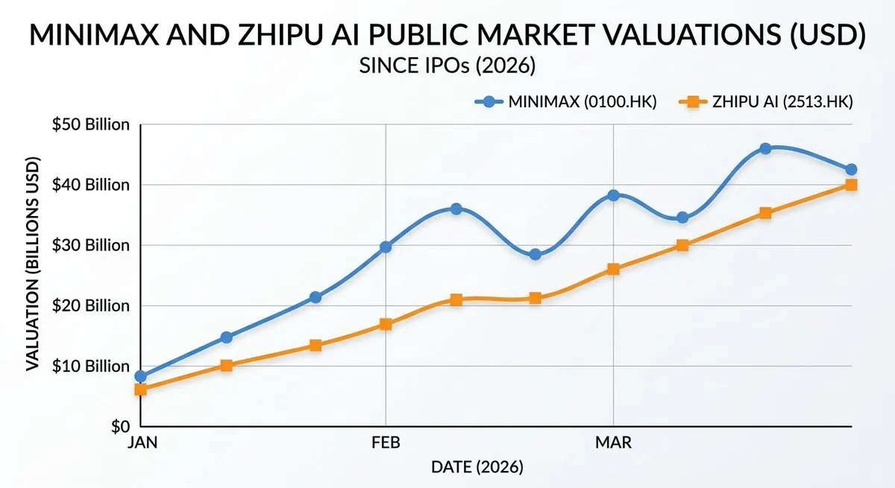

在中国 AI 生态圈摸底了两周，我学到了什么
译注：关于作者
José Maria Macedo（若泽·马里亚·马塞多），Delphi Ventures 创始合伙人、Delphi Labs 创始人兼 CEO。Delphi Digital 成立于 2018 年，是加密货币和数字资产领域最具影响力的独立研究机构之一，旗下 Delphi Ventures 管理着超过 200 个投资组合项目。Macedo 本人在加密货币行业深耕多年，曾就读于布鲁塞尔国际学校，学习政治、哲学与经济学（PPE），在校期间就创办了多家盈利企业，并获得过约克公爵青年企业家奖等荣誉。近年来，Delphi Ventures 的投资触角正从 Crypto 延伸到 AI 和深度科技领域，本文正是 Macedo 在中国进行 AI 生态实地考察后写的观察总结。
最近，我在中国待了两个星期，拜访了 AI 生态圈里的各位创始人、风险投资人（VC）以及上市公司的 CEO。去之前，我对这个生态是非常看好的（bullish），满心期待能在这里以远低于西方的估值，发掘到世界级的 AI 人才。
但离开时，我的看法变得更加复杂且微妙： 我对中国硬件的看好程度超出了我的预期，但对软件却更为看衰（bearish）；同时，我对中国创始人们的一些观察，也让我感到十分惊讶。
创始人的特质之谜 (The Founder Question)
我所投资过的那些伟大的创始人，身上都有一种极具辨识度的“基因”： 独立思考、一身反骨、激情四射且极其执着。他们绝不乖乖听话，总是不断地问“为什么”，并且拒绝盲从现成的经验。他们做出的决定在外人看来往往匪夷所思，但对他们自己来说却顺理成章。他们骨子里有一种毫不妥协的冲劲，这往往体现在他们过往那种近乎痴迷和追求极致的经历中。在 VC 每天接触的茫茫多的高智商人群里，他们身上那种“锋芒”（spikiness）总能让你一眼就认出来。
然而，我在中国遇到的很多创始人，却属于另一种完全不同的类型——这让我挺吃惊的。
他们无疑是极其优秀的：顶尖名校毕业，在字节跳动或大疆（DJI）有过光鲜履历，在《自然》（Nature）杂志发过论文，手握多项专利。在西方，只有最顶尖那一拨技术人才才具备的成就，在这里简直成了“入场券”。而且， 他们比我见过的几乎任何人都要拼命。我们的会议可以安排在任何时间、周末、甚至跨越不同的城市。有一位创始人，甚至在妻子分娩当天还跑来见我们！
但是， 那种独立思考的能力、那种反叛精神、那种从零到一（zero-to-one）的愿景，却很难在他们身上看到。这些创始人的背景高度同质化，他们的商业计划书更为规避风险，他们的点子往往只是现有产品的豪华 V2 版（V2s），而非真正意义上的原创押注。考虑到中国培养了如此海量的技术人才，我本以为能在这里听到更多前所未闻的奇思妙想。
V2s 即 Version 2，指在现有产品基础上的迭代升级版；zero-to-one 指从无到有的颠覆性创新。
我的解读是， 中国的教育体系培养出了卓越的人才，但却没有给“离经叛道”留出足够的空间。这导致产出的创始人往往是解决已知问题的顶尖执行者，而不是那种能揪出一个“没人知道它存在”的问题并将其解决的人。
VC 正在推波助澜 (VCs Are Reinforcing the Pattern)
更有意思的是，本土的投资人们正在加剧这种现象。
很多中国投资基金的核心投资逻辑，就是 押注来自字节跳动或大疆的优秀前员工——他们看重“血统”而非“锋芒”，看重“光环”而非“信念”。VC 们的背景也折射出了这一点：大多数人都有着大厂、咨询公司或投行的背景，这和十年前欧洲的 VC 圈如出一辙。
讽刺的是，回顾历史，中国最顶尖的创始人——那些真正缔造了时代级伟大公司的企业家—— 往往根本没在大厂打过工：
- 马云 是个高考落榜两次的英语老师
- 任正非 离开部队后，在 43 岁创办了华为
- 刘强东 是从摆地摊开始创办京东的
- 王兴 博士辍学，从第一天起就开始创业
- 梁文锋 除了自己的公司外，从未在其他任何地方上过班，却打造出了 DeepSeek
他们都是打破常规的异类，是没有光鲜“证书”的人——而恰恰是这类人，在当前的投资体系下大概率会被直接筛掉。
发掘这类创始人才能带来真正的超额收益（alpha），但在我看来，现在几乎没有人在关注这个群体。
alpha 是金融术语，指超越市场平均水平的回报，这里借指独特的投资眼光与回报。
深圳与硬件生态 (Shenzhen and the hardware ecosystem)
我在中国看到的最震撼的东西，不是哪场创业路演。
而是深圳的“地下硬件工坊”——在那些车间里，工程师们 系统性地采购西方的高端产品，然后把它们大卸八块，以极其严谨的方法对每一个零部件进行逆向工程（reverse engineering）。离开时我真的有些怀疑，大部分西方做硬件的创始人，到底知不知道自己面对的竞争对手是个什么怪物。这里的网络效应不是停留在纸面上的理论，而是实体存在的、高度密集的，且是经过几十年积累而成的。
我们遇到的创业者用数据印证了这一点： 超过 70% 的硬件原材料采购自大湾区，接近 100% 来自中国本土。这种供应链优势，让他们的产品迭代周期快到西方硬件公司根本无法企及。
我遇到的大多数创始人都在复制“大疆模式”：在某个垂直细分领域打造消费级硬件——比如电动轮椅、割草机器人、新一代健身设备——将营收规模做到千万甚至上亿美元，然后利用积累的客户群或底层技术，向相邻的品类扩张。有些公司的规模已经远超你的想象。我见到的最令人惊叹的公司是 拓竹（Bambu），一家大多数西方人可能都没听过的 3D 打印公司，据说它的 年利润高达 5 亿美元，并且还在以每年翻倍的速度增长。
对中国软件市场持悲观态度 (Bearish on Chinese Software)
相比来的时候，离开时我对中国软件领域的投资机会更加持怀疑态度。
在模型层（model layer），中国的开源（open source）模型确实令人瞩目——但 闭源模型（closed models）与西方最顶尖水平相比仍有显著差距，而且这个差距很可能会越来越大。这背后的资本支出（CapEx）差距是巨大的。获取 GPU 依然受到限制。而且西方的顶级 AI 实验室正越来越严厉地打击模型蒸馏（distillation）。营收数据更是将差距体现得淋漓尽致：据报道， Anthropic 仅在二月份就实现了 60 亿美元的收入；而中国最好的模型，其年度经常性收入（ARR）也不过在几千万美元的量级。
CapEx 指购买 GPU 等计算基础设施的大额投资；distillation（模型蒸馏）是一种让小模型通过学习大模型输出，来走捷径提升能力的训练方法。
在软件初创公司方面，目前的主流画像是前字节跳动的产品经理和研究员，他们正在针对西方市场开发各种具有智能体（agentic）功能或环境感知的消费者软件。人才确实顶尖，但 很多这类产品完全处于海外大型 AI 实验室未来原生自带功能的射程范围内——一旦大厂更新，它们就会变得多余。我还注意到，中国普遍缺乏那种规模庞大、增长迅猛的非上市软件公司。在西方，除了做大模型的公司之外，已经涌现出了一批 ARR 达到千万甚至上亿美元、且增速惊人的明星初创企业，比如 Cursor、Loveable、ElevenLabs、Harvey 和 Glean。 这种级别的破局者在中国基本看不到 ——而仅有的几个例外，比如 HeyGen、Manus 和 GenSpark，一旦找到了破局点，最终也都选择了“出海”离开。
估值泡沫 (The Valuation Bubble)
撇开软件不谈，无论是在早期还是中后期，市场的泡沫都是实打实的。
在早期阶段，虽然从字节跳动、DeepSeek 和月之暗面（Moonshot）出来的顶尖人才，其薪酬成本仍远低于美国同等水平的人才，但 公司的估值中位数却已经与美国看齐。甚至还没有产品的消费级初创公司，估值在一到两亿美元之间是常态。种子前轮（Pre-seed）融资超过 3000 万美元也见怪不怪。
到了中后期，这些估值数字就更难自圆其说了：
| 公司 | 估值 | ARR | 估值/营收倍数 |
|---|---|---|---|
| MiniMax | ~400 亿美元 | <1 亿美元 | ~400x |
| 智谱（Zhipu） | ~250 亿美元 | ~5000 万美元 | ~500x |
| OpenAI（对比） | 融资顶峰 | — | ~66x |
| Anthropic（对比） | — | — | ~61x |

像月之暗面这样的非上市模型公司，正是利用这些公开市场的可比估值（comps），在短短几个月内以 60 亿、100 亿甚至 180 亿美元的估值进行融资。币圈（Crypto）的投资人对这种套路绝对不陌生： 投资人正在用非上市公司的估值，去对标一个解锁前的公开市场标价。此外，支撑智谱和 MiniMax 维持在如此高位的另一个原因是，目前它们是投资人押注“中国 AI 叙事”仅有的渠道，这种稀缺性自然带来了溢价。但随着更多公司进入市场稀释份额，这种情况将会改变。最后， IPO 的窗口期向来是说关就关、毫无征兆的 ——你根本无法确定，在你用来对标的那个价格暴跌之前，你能不能顺利完成套利（arb）。
“解锁前的公开市场标价”是加密货币圈术语，指由于代币尚未解锁流通，导致盘面资金极小、价格被严重虚高的现象。
人形机器人（humanoid）领域的情况也如出一辙。中国大约有 200 家 人形机器人公司，其中约 20 家 融资金额超过 1 亿美元，有几家甚至高达数十亿美元—— 几乎所有这些公司都还未产生收入（pre-revenue），大部分都计划在 2026 或 2027 年赴港 IPO。如果这个市场真的存在，中国在硬件领域的绝对优势会让长期的竞争格局变得非常清晰。但商业化的落地时间，很可能会比当前这疯狂的融资节奏所预期的要漫长得多。而且，我非常怀疑香港股市能否承接得住目前排着队等待上市的这么多估值几十亿美元的人形机器人公司。所以我目前选择观望。
值得关注的“不对称性” (The Asymmetry Worth Paying Attention To)
有一点完全出乎我的意料：我遇到的 几乎所有创始人，都是优先瞄准全球市场，其次才是中国市场。他们日常使用 Claude Code 写代码，看 Dwarkesh 的硬核访谈播客。他们对旧金山的创业圈生态了如指掌，有时候甚至比那些没怎么密切关注市场的西方投资人还要清楚。
西方对中国的防备心理，要远高于中国对西方的不满。 中国的创始人们觉得，把中国顶级的工程执行力和深厚的硬件功底，与西方的走向市场（go-to-market）策略和产品愿景结合起来，是再自然不过的事。这种结合一旦落在一个对的创业团队身上，必将诞生出一些真正令人惊叹的伟大公司。
找到这样的创始人——那些不符合本土 VC 圈刻板“精英履历”标准的异类——正是我们现在的首要目标。
特别感谢 @woutergort 向我们分享了他强大的中国关系网，感谢 @PonderingDurian 组织了这次行程，也感谢 Claude 耐心地润色了我在飞机上的这些碎碎念。
原文：What I Learned from Two Weeks Inside China's AI Ecosystem https://x.com/ZeMariaMacedo/status/2036779960598163864